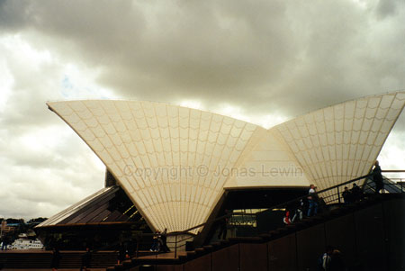
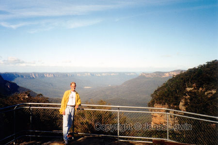
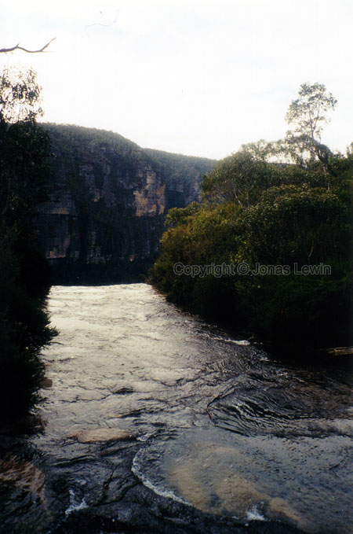

{kind=link}
When you are at the Opera house, it's a short walk to the Harbor Bridge. The
Australians seem to be so proud of it. I can't see the reason. The opera
house is to me so much greater.
I was here during their mid winter. 20 degrees and sun. Winter! We are
thrilled in Sweden when the temperature finally reaches 20 degrees.
What you should see in Sydney is the Opera House. This is so huge. You see
it in postcards, and on TV, but you really don't grasp the size of it.

After
that you should continue walking to one of the great gardens they have. It
will be worth your while. When you have seen enough green, continue down to
Darling Harbor. A fairly modern Harbor, and everyone keeps telling me that I
should visit it. I just felt that the Harbor in Keelung, Taiwan, was looking
more impressive though. I leave that up to you to decide. If you have the
possibility to see it, it's still a sight worth seeing.
Just
an ordinary street in Sydney.
This was the 3rd time I saw Star wars Episode I. The theatre here was one of
the worst I've been to. I almost didn't enjoy the movie because of that. The
next time I saw Episode I was in
Filmpalatset, Bromölla, Sweden. This theatre is almost as great as The
Emporium in Thailand. This means that I saw Episode I on 3 continents.
Which other movies did I see in Australia?? None. Why bother?
The
quite different type of train.
Darling
Harbor.
Outside Sydney, you can find the great Blue Mountains. Very fresh air to
take a walk in. You can also choose how difficult your walk should be
(unless you have me as a guide and get lost). This gave me more than just
walking straight to our goal. I got to see lots of different nature
environment. So if you have a day over in Sydney, try to get to the Blue
Mountains, and walk to the Three Sisters. It's not the sisters that are the
interesting part, it's the walk.


A few years before I where there, a substantial fire had been sweeping
though the mountains. Now nature is recovering. I saw trees and branches
that where completely black, but lots of them had green leaves. It's amazing
how nature will find a way...
The food in Australia is, as its reputation tells, a lot of barbecue. They
have developed this to an art form close to perfection. So all of you
barbecue fans, go to Australia.